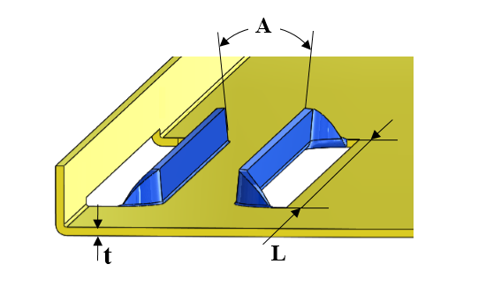

カードガイドのパラメータは、ユーザーが指定した値に従って設定する必要があります。
カードガイド成形とは、スライドするカードを案内するためにシートメタル表面に設けられる成形形状です。これはシートメタル設計における成形プロセスの一部です。設計時には、金型上の問題を回避するために、適切なカードガイドパラメータを維持する必要があります。
一般的な指針として、カードガイドの最大長さは 5 インチ未満とし、カードガイドの最小開口角度は 15 度とすることが推奨されます。
DFMPro はカードガイド成形フィーチャーを識別し、カードガイドの長さ（L）およびカードガイドの開口角度（A）を算出します。これらの値は、構成された値に対して検証されます。
ユーザーは、デフォルトで構成されている値を編集することができます。

ここでは、
A = カードガイド成形の開口角度
L = カードガイド成形の長さ
t = 板厚